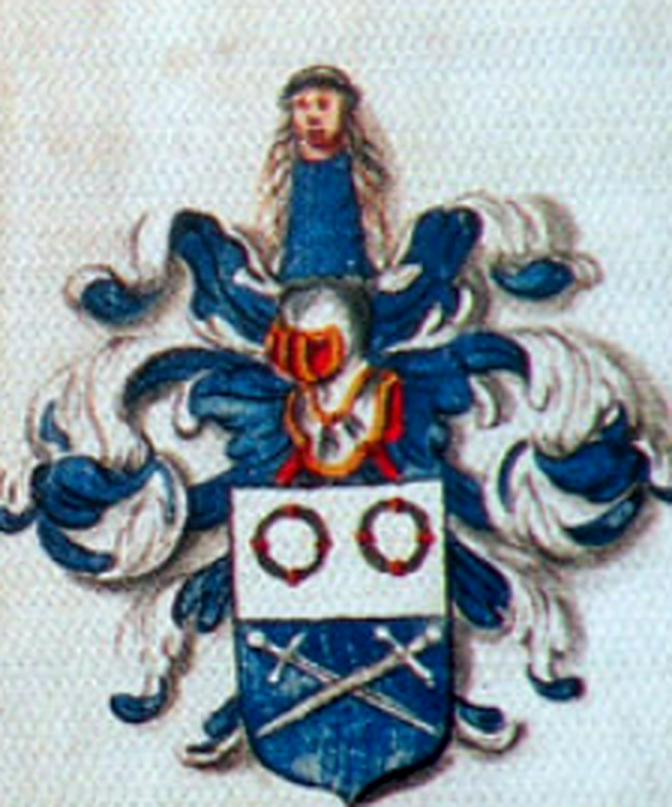
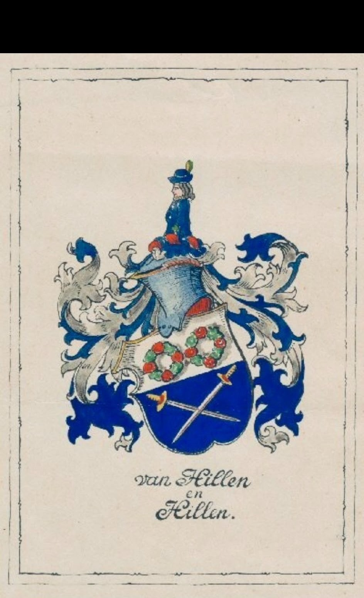
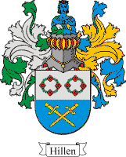
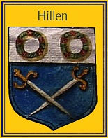
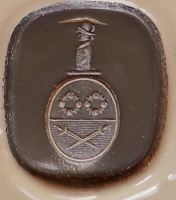
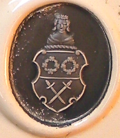
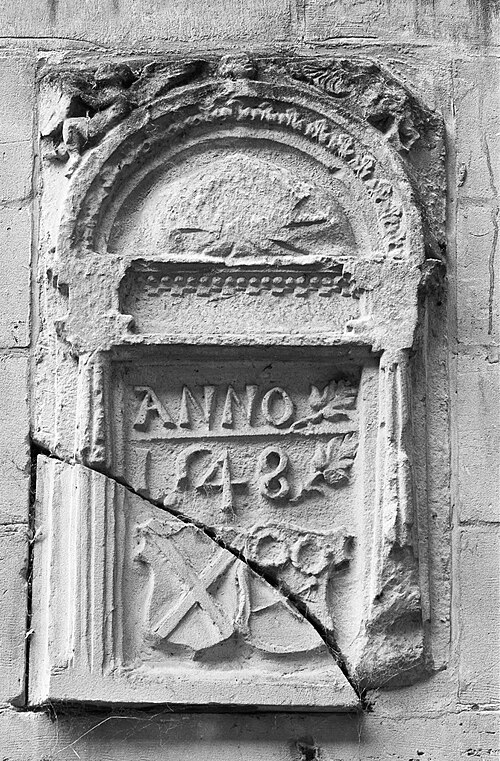
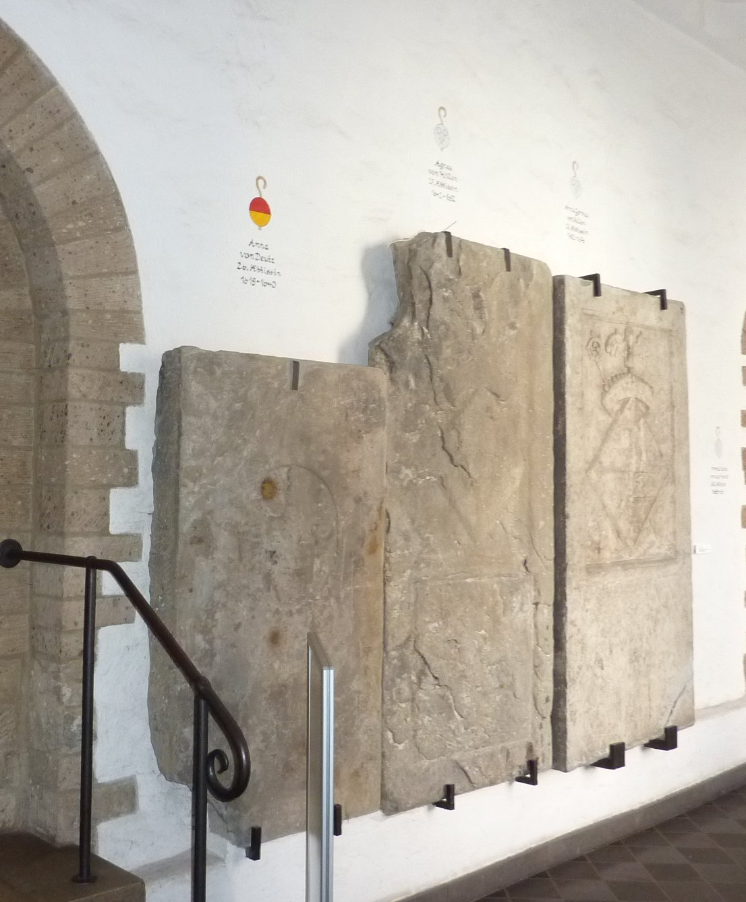

De Roermondse Hillens · vanaf 1548
Het familiewapen

Dit is het wapen van de Roermondse familie Hillen, de stam waar alle takken in deze stamboom uit voortkomen. De oudste afbeelding is de gevelsteen van 1548 op kasteel Het Geudje: het alliantiewapen van Catharina Hillen en Lodewijk in der Horst. Catharina was een dochter van Henricus Hillen en een zus van burgemeester Johan Hillen (1512–1600), van wie de lijn naar Blerick en later Vught afstamt. In 1566 zegelde schepen Johan Hyllen met het wapen, en De Maasgouw (1925) noemt het uitdrukkelijk het wapen "der Roermondsche van Hillen". Later voerden ook de jonkers Hillen tot Helden, de baronnen Hillen zu Sülz op Haus Sülz en de abdissen van Klooster Saarn het.
Blazoen
Schild: gedeeld/doorsneden — boven in zilver twee groene kransen (elk met vier rode rozen in kruisvorm), beneden in lazuur (blauw) twee gekruiste zwaarden (Andrieskruis) met de punten omlaag.
Helmteken: een borstbeeld in lazuur, getooid met eenzelfde krans om het hoofd. Dekkleden blauw en zilver.






Het oudste getuigenis: Roermond, 1577
In 1577 bekeken burgemeester en schepenen van Roermond, samen met een notaris, de oude oorkonden van de familie. Twee broers In der Horst, kleinkinderen van Henrick Hillen en Sara van Bree, moesten bewijzen van welke families zij afstamden. De schepenen bekeken daarvoor de zegels aan de oude akten en schreven op wat ze zagen:
"… das die Hillen von alters gefuert zwen schwerder durch ein ander und daroben zwen Rosenkrentz …"
In gewoon Nederlands: de Hillens voerden van oudsher twee zwaarden door elkaar, met daarboven twee rozenkransen. Dat is precies het wapen hierboven. In dezelfde verklaring staan ook de wapens van de aangetrouwde families: Van Bree voerde drie adelaars, Pollart een leeuw, en Van Loeven "drey affgaende Belck und daeroben drey ronden Koeckskens" (drie schuine figuren met daarboven drie ronde schijfjes).
Het wapen was in 1577 dus al zo oud dat de schepenen het "von alters" noemden. Bron: het kwartierbewijs van 1577, afgedrukt in De Maasgouw 34 (1912), nr. 5, blz. 36–37 (Delpher).
Bewijs uit de 17e eeuw: zegels en een grafsteen
Dat dit het wapen van de familie is, blijkt uit zegels en een grafsteen van drie dochters van jonker Reyner Hillen tot Helden. Twee van hen waren na elkaar abdis van het cisterciënzerinnenklooster Saarn (Mülheim an der Ruhr), de derde was abdis van Dalheim.
- Zegel van abdis Agnes von Hyllen, 18 mei 1642. Onder een barokke poortboog staat de abdis met haar staf, met daaronder haar wapen: "Schild geteilt; oben: 2 Kränze nebeneinander, unten: 2 gekreuzte Schwerter, die Spitze nach unten". In het Nederlands: een doorsneden schild, boven twee kransen naast elkaar, onder twee gekruiste zwaarden met de punten omlaag. Het opschrift luidt Agnes von Hyllen abbatissa in aula s. Mariae Virginis. Het klooster bleef dit zegel tot 1661 gebruiken.
- Lakzegel van abdis Josina Clara von Hyllen van Dalheim, 1 juli 1665. Volgens De Maasgouw (1925) toont het "het wapen der Roermondsche van Hillen".
- Grafsteen van abdis Anna Gertrud von Hillen (overl. 19 september 1676), in de kruisgang, met het opschrift "Anna Gertruit ab Hillen de Helden abbatissa". Het wapen is gevierendeeld: in 1 en 4 de twee kransen boven de gekruiste zwaarden, in 2 en 3 een klimmende leeuw met één staart. De leeuw is vermoedelijk een kwartier van haar moeders familie, maar dat is nog niet bevestigd.

De zegels en de grafsteen geven alleen de vormen, geen kleuren. De kleuren in het blazoen hierboven (zilver, groen, rood en blauw) staan beschreven door pastoor M.J. Janssen in De Maasgouw van 1925, en komen overeen met de wapenkaarten in het familiearchief.
Originele zegels in Duitse archieven
Dit zijn originele akten van leden van de Duitse tak. Bij drie ervan vermeldt de archiefbeschrijving uitdrukkelijk een zegel van een Hillen. Geen van deze stukken is online gescand. Het wapen erop zien kan alleen door een scan aan te vragen bij het archief.
- 1614, Reinhard von Hillen zu Helden, visrecht bij Asselt — Archiv Schloss Haag, Altbestand 293 (origineel; een zegel wordt niet genoemd).
- 1647, abt Wilhelm Gottfried von Hillen van Hamborn — "es siegelt der Aussteller": Landesarchiv NRW, Werden, Urkunden 2939.
- 1684, Johann Otto von und zu Hillen und Sülz als getuige en zegelaar; de beschrijving noemt de zegels 1–5 ("Sg. 1–5 erb.") — Schloss Schönstein, Urkunden 2845.
- 1715, Ludwig Augustin Freiherr von Hillen — "es siegeln Freiherr von Hillen und Freiherr von Boland": Landesarchiv NRW, Heisterbach, Urkunden 335.
Let op: een Westfaalse familie "von Hillen" bij Recklinghausen (naar de hof Hillen) is een andere familie.
Bronnen
- M.J. Janssen, "Het huis ten Hove te Helden", De Maasgouw 45 (1925), blz. 1 — de bron van het blazoen met kleuren hierboven. Delpher.
- "De families Bouwens van der Boyen en van Hillen", De Maasgouw 45 (1925), blz. 46 — over het lakzegel van abdis Josina Clara von Hyllen (1665). Delpher.
- Genealogie Limburg Wiki, "Hillen" (Hoofdboom), genwiki.nl.
- G. von Roden, Die Zisterzienserinnenklöster Saarn, Duissern, Sterkrade (Germania Sacra N.F. 18, 1984), § 3 Denkmäler, § 16 Siegel en § 24 Äbtissinnen — op basis van H. Glöckner, "Grabsteinfunde" (Mülheimer Jahrbuch 1961) en Mülheimer Jahrbuch 1951, S. 13 (nagetekend wapen). PDF.
- Familiearchief: gescande wapenkaarten en zegelafdrukken (herkomst binnen de familie).
Nog te bevestigen: officiële registratie bij de Hoge Raad van Adel of het Centraal Bureau voor Genealogie is niet gecontroleerd; dit dossier steunt op de bovenstaande bronnen.